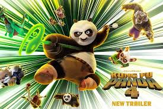

Riview: Kungfu Panda 4
31 Mei 2024
Kung Fu Panda 4 kembali menghadirkan karakter utamanya, Po (Jack Black), yang kini telah menjadi Dragon Warrior yang dihormati dan terkenal di Valley of Peace. Ketenangannya terganggu ketika Master Shifu (Dustin Hoffman) memberitahu sudah saatnya melepaskan peran Dragon Warrior dan menjadi Spiritual Leader, mengikuti jejak Master Oogway sebelumnya. Namun, Po yang masih mencintai statusnya sebagai pendekar, menolak gagasan itu. Intrik dimulai ketika muncul ancaman baru dalam bentuk Chameleon (Viola Davis), bunglon penyihir pengubah wujud yang mengincar kekuatan dari musuh-musuh Po di dunia roh. Untuk menghadapi ancaman ini, Po harus memilih penerus Dragon Warrior dan bersatu dengan Zhen (Awkwafina), seekor rubah ninja yang cerdik. Meskipun beberapa momen aksi kung fu dan candaan khas Po kembali ditampilkan, tetapi keseluruhan film ini seolah kehilangan momentum yang pernah membuat waralaba ini menjadi kejayaan. Kurangnya perkembangan karakter Po yang signifikan juga membuat Kung Fu Panda 4 terasa kurang bermakna. Po yang sebelumnya telah menemukan identitasnya dan mengatasi berbagai rintangan, kini terjebak dalam alur cerita yang terasa generik dan tanpa makna. Film ini terasa lebih seperti episode dari serial televisi daripada sebuah perjalanan epik yang biasa kita nikmati di layar lebar. Absennya karakter Furious Five, yang sebelumnya menjadi elemen untuk meningkatkan aksi kung fu, menyisakan Jack Black dan Awkwafina seolah mencoba melakukan duo stand up comedy sepanjang film. Interaksi antara Po dan Zhen menyuntikkan humor dan memberikan perspektif dinamika kepahlawanan yang unik. Keduanya mampu menyeimbangkan humor untuk anak-anak dan dewasa. Sutradara Mike Mitchell kurang memberikan sentuhan epik dan aksi yang intens yang menjadi ciri khas dari waralaba Kung Fu Panda. Walau begitu, Kung Fu Panda 4 masih menghibur penontonnya. Visualnya yang ditingkatkan dan lingkungan baru yang diperkenalkan, terutama di Juniper City, memberikan variasi yang menyegarkan. Adegan aksi animasi yang inovatif dan desain karakter yang menarik tetap memberikan hiburan, terutama untuk penonton muda yang sebelumnya tidak mengikuti film ini. Kehadiran beberapa pengisi suara sebelumnya, sekelas Dustin Hoffman, Bryan Cranston, dan James Hong, hingga Ian McShane juga menghadirkan nostalgia tersendiri bagi penonton setia waralaba. Secara keseluruhan, Kung Fu Panda 4 masih memberikan aksi humor dan kung fu yang menghibur. Walau begitu, film berdurasi 92 menit ini gagal menyamai kejayaan pendahulunya, khususnya film pertama yang sejauh ini rasanya tetap menjadi yang terbaik dari keempat film.